This report rebuilds the business impact slide of the Asset Knowledge Platform proposal as a full financial model. Every value on the slide now traces to a formula in the accompanying Excel workbook, to the 211 work orders supplied with the case, or to a cited market source. The workbook has 23 sheets, about 2,187 live formulas and 28 integrity checks, and a separate Python replica reproduces its results to the last digit.
The Base scenario counts only four evidence-based levers: time spent searching and checking sources, repair time, repeat failures and faster start for new staff. Start-up delay, incident cost and document rework are reported as upside and are not part of any headline figure.
| Base scenario | 1 unit (pilot) | 3 units | 6 units | 12 units |
|---|---|---|---|---|
| Annual value at full rollout (IDR M, year 0 prices) | 1,275 | 3,825 | 7,458 | 14,533 |
| One-off cost over the programme (IDR M) | 1,766 | 2,708 | 4,148 | 7,067 |
| Net present value before tax (IDR M) | -205 | 3,320 | 7,446 | 14,131 |
| Net present value after tax (IDR M) | -252 | 2,442 | 5,560 | 10,550 |
| Internal rate of return before tax | 8% | 44% | 62% | 77% |
| Payback (months) | 50 | 34 | 32 | 34 |
| Probability that NPV is positive (Monte Carlo) | 27% | 82% | 93% | 97% |
| Earlier slide | Earlier value | New model | Reason |
|---|---|---|---|
| Annual value, 1 unit (IDR M) | 1,521 | 1,275 | Haircuts for productive time and attribution; adoption of 85 percent |
| Pilot one-off cost (IDR M) | 1,400 | 1,766 | Rebuilt line by line |
| Pilot running cost (IDR M a year) | 370 | 731 | Knowledge manager, platform engineer, hosting, security |
| Payback, 3 units (months) | 12 | 34 | Phased rollout and adoption ramp by cohort |
| Value of a breakdown hour (IDR M) | 30 | 33.1 | Built from capacity, margin and share of hours with output loss |
The CALIBER 2026 Case Book asks for a Manufacturing Knowledge Hub that connects scattered plant knowledge, gives engineers trusted and cited answers and supports reliability decisions. The business impact section must show expected benefits, key performance indicators and measurable value with supporting evidence. This report answers the business side of the three key questions.
| Key question | Business answer in this report |
|---|---|
| 1. How can the Company build a structured Industrial Data Ops foundation? | A one-off shared cost of IDR 1,322 M covers four connectors, security and governance. Section 5 prices it and Section 6 shows that it is repaid from two units. |
| 2. How can AI help engineers find trusted information faster? | Search and checking time falls by 50 percent, from 40 to 20 minutes a day. Lever 1 values it at IDR 340 M a year for one unit. |
| 3. How can the hub support reliability and continuous improvement? | Failure memory shortens repairs and prevents repeats. Levers 2 and 3 are 70% of the value. |
Every input carries an evidence tag: Case data, Market source, Estimate or Assumption. The Inputs sheet lists the pessimistic, base and optimistic value of each driver, and one switch changes the whole workbook.
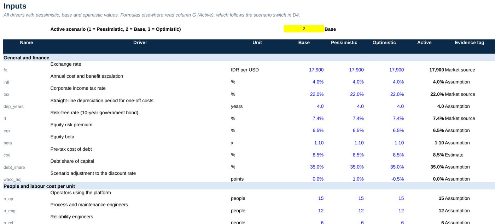
| Indicator | Value | Source |
|---|---|---|
| Polyethylene capacity at Cilegon | 736 kt a year (336 kt existing and 400 kt added in 2020) | Chemical Engineering; Chandra Asri |
| Ethylene capacity | 860 kt a year, the only producer in Indonesia | Chandra Asri investor update, 2018 |
| Employees, 2024 | 3,746 | Sustainability report 2024 |
| Revenue and result, FY2024 | USD 1.79 billion, down 17.4 percent; net loss of USD 69 million | IDNFinancials |
| Polyethylene and polypropylene demand | 3.6 Mt a year, rising about 50 percent to 5.3 Mt by 2027; half is imported | AHK Indonesia |
| Domestic polyethylene capacity | 1.2 Mt a year at about 80 percent utilisation; import quotas since March 2024 | AHK Indonesia; Argus |
| Chemical industry, 2024 | Exports of USD 17.4 billion and investment of IDR 65.8 trillion | Ministry of Industry |
| Southeast Asia LLDPE price, 2026 | USD 920 to 1,500 per tonne CFR | Polymer Update |
Three conclusions follow. First, Chandra Asri reported a loss in FY2024 in a volatile margin environment, so a digital programme must repay quickly and be released in stages. Second, Indonesia imports about half of its polyethylene and is raising import barriers, so every point of domestic utilisation matters: one percentage point on 1.2 Mt of capacity is 12 kt, or about USD 2.6 million of margin at USD 220 per tonne. Third, plant knowledge is at risk: surveys report that about 40 percent of chemical workforces are aged 45 or over and that most knowledge is tacit.
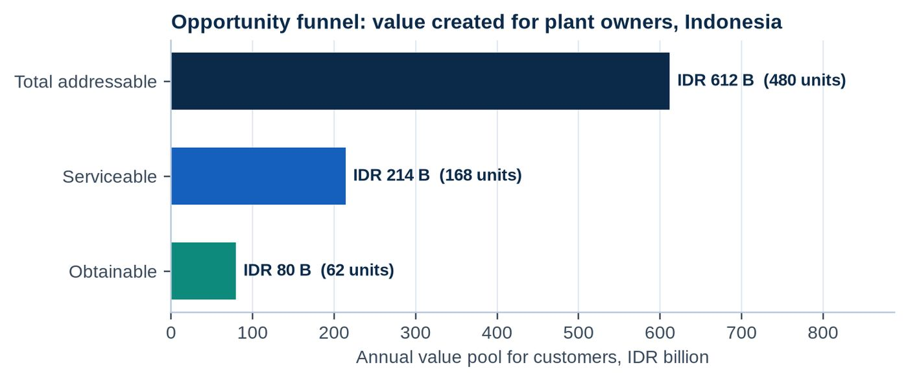
The bottom-up sizing assumes 80 manufacturing sites with 6 process units each, which gives 480 units. A unit is a process area the size of the sample LLDPE unit, with about 45 plant staff. Of these, 35 percent sit at sites with an existing document or maintenance system and a digital programme (168 units), and 62 could be reached in five years: 12 internal units and about 50 external ones. At the value per unit of IDR 1,275 M a year, the value pool falls from IDR 611.9 B to IDR 214.2 B and IDR 79.6 B. If a provider priced at 20 percent of value created, the Indonesian revenue pool would be IDR 122,387 M (6.8 million USD), or about 27 million USD with a Southeast Asia multiple of four. A top-down estimate from the national AI market gives a serviceable pool within a factor of 8 of this figure.
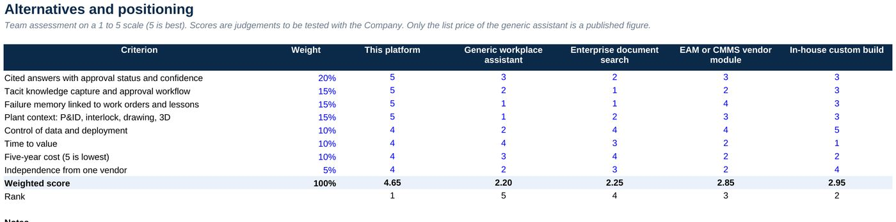
A generic workplace assistant is the closest low-cost alternative. At the published list price of USD 30 per user a month, 135 users cost about IDR 4,350 M over five years before the base Microsoft 365 licence. That is lower than the IDR 8,900 M five-year cost of the platform, but a generic assistant does not hold approval status, interlock logic, work order history or tacit knowledge as structured, auditable facts. Those features create most of the value in Levers 2 and 3.
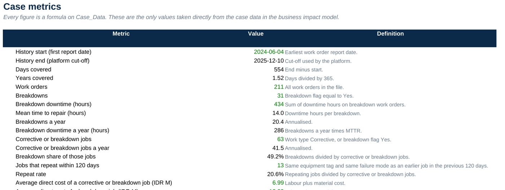
Between June 2024 and December 2025 the plant recorded 31 breakdowns that cost 434 hours of downtime. The mean time to repair is 14.0 hours and breakdowns run at 20.4 a year, which is 286 downtime hours a year. Of 63 corrective or breakdown jobs, 13 (21%) repeat the same failure mode on the same equipment within 120 days. A direct repair job costs IDR 7.0 million on average. In addition, 66 of the 98 controlled documents carry no approval status.
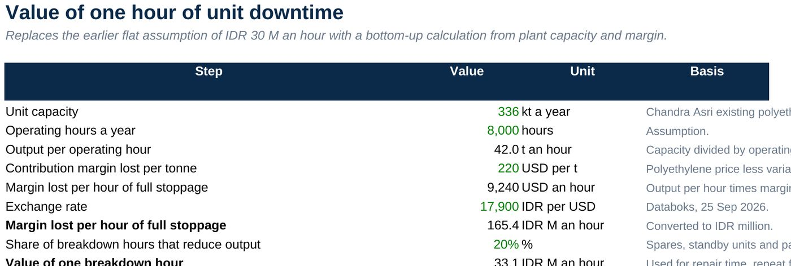
The earlier slide used a flat IDR 30 million an hour. The new value starts from a unit capacity of 336 kt a year, which gives 42 tonnes an hour, and a lost margin of USD 220 per tonne. A full stoppage then costs IDR 165 million an hour. Because many equipment sets have spares or only reduce performance, only 20% of breakdown hours are assumed to reduce output, which gives IDR 33.1 million. This is the single most influential assumption in the model and it is tested in Section 7.
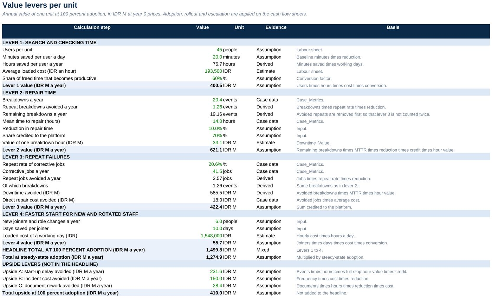
| Lever | How it is valued | Evidence | IDR M a year |
|---|---|---|---|
| 1 Search and checking time | 45 users x 20 minutes saved x 230 days x loaded cost x 60% productive | Assumption, cited context | 340 |
| 2 Repair time | Remaining breakdowns x 14.0 h x 10% x 70% credited x IDR 33 M an hour | Case data and estimate | 528 |
| 3 Repeat failures | Avoided repeat jobs (2.6 a year) x repair cost and downtime, 70% credited | Case data | 359 |
| 4 Faster start for new staff | 6 joiners x 10 days x loaded day cost x 60% productive | Assumption | 47 |
| Total at 85% adoption | 1,275 |
Avoided repeat breakdowns are removed before the repair time lever is calculated, so no hour is counted twice. The upside levers are start-up delay avoided (IDR 197 M), incident cost avoided (IDR 128 M) and document rework (IDR 24 M) a year per unit. They rest on assumptions only and are excluded from every headline figure.
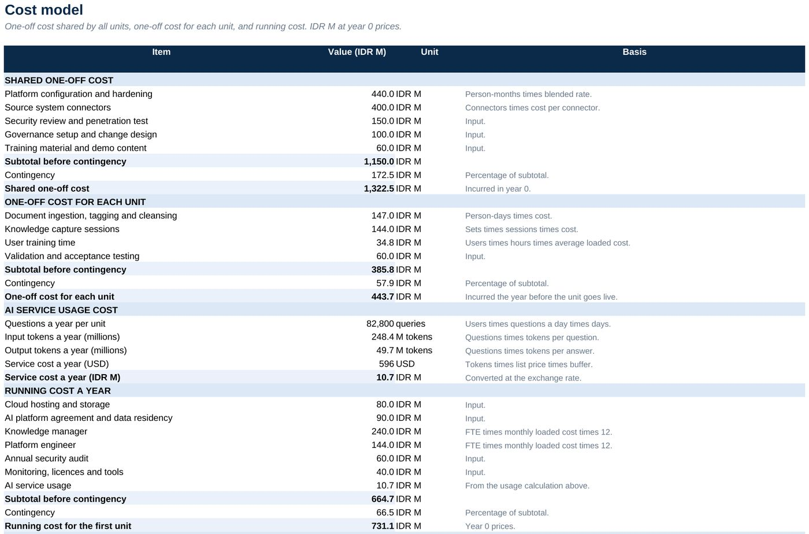
The shared one-off cost is IDR 1,322 M including 15 percent contingency. It covers platform configuration (8 person-months), four connectors (EDMS, AIMS, CMMS and the historian), a security review, governance and training material. Each unit then needs IDR 444 M for document ingestion, knowledge capture sessions, user training and acceptance testing. Running cost is IDR 731 M a year for the first unit and IDR 256 M for each extra unit.
The AI service itself costs only about IDR 11 M a year for one unit at list prices, so it is not a cost driver. People, data work and integration are. The pilot one-off cost is IDR 1,766 M, which is 26% above the earlier estimate of IDR 1,400 M, and the running cost is 98% above IDR 370 M. The earlier figures had no line-by-line support.
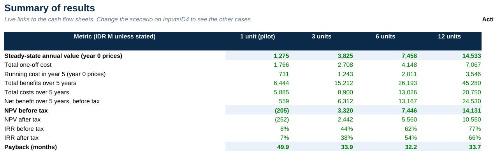
A three-unit programme costs IDR 2,708 M of one-off spend in total, because units two and three are onboarded in years 1 and 2. It reaches IDR 3,825 M of annual value at full rollout and a net present value of IDR 3,320 M before tax and IDR 2,442 M after tax. The internal rate of return is 44% before tax. Simple payback is 34 months and discounted payback 38 months, because adoption builds over two years and the later units start later. The benefit-cost ratio is 1.48.
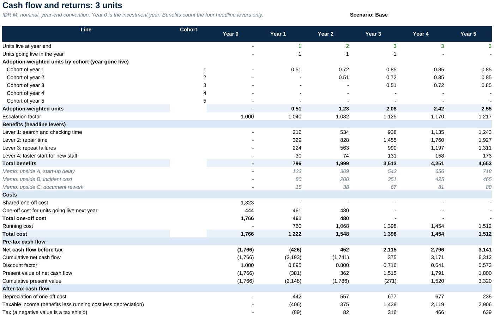
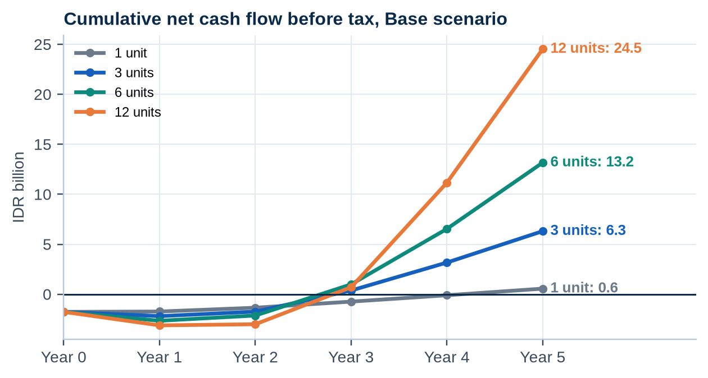
Cash flow is negative through year 2 in every programme and recovers during year 3. A single unit reaches break-even only after 50 months. Across the scenario switch, the three-unit NPV ranges from IDR -1,299 M in the pessimistic case to IDR 9,974 M in the optimistic case, where every driver moves together. Section 7 shows how likely each outcome is.
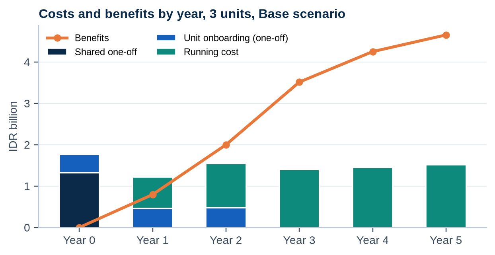
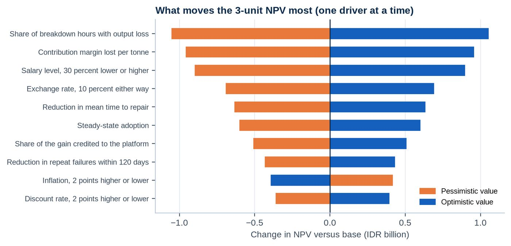
The five largest drivers are: share of breakdown hours that reduce plant output, contribution margin lost per tonne, salary level (all roles), 30 percent lower or higher, exchange rate, 10 percent stronger or weaker rupiah and reduction in mean time to repair. The first two set the value of a downtime hour. The three-unit NPV stays positive until the share of breakdown hours that reduce output falls from 20% to 11%, until the margin falls from USD 220 to USD 116 per tonne, and until the reduction in repair time falls from 10 percent to 2.2%. Costs can rise by 48% before the NPV is zero.
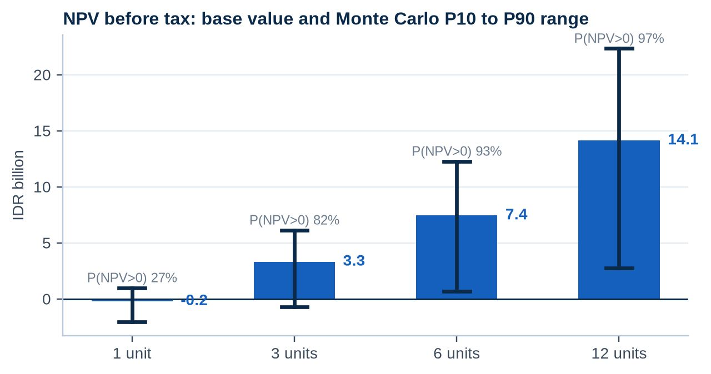
The Monte Carlo run draws 17 drivers independently from ranges that are wider than the scenario switch. For three units the mean NPV is IDR 2,443 M, the median is IDR 2,066 M, and 82% of outcomes are positive. The 5th percentile is IDR -1,418 M. A single unit is positive in only 27% of outcomes, which confirms that the pilot should not be judged on its own return.
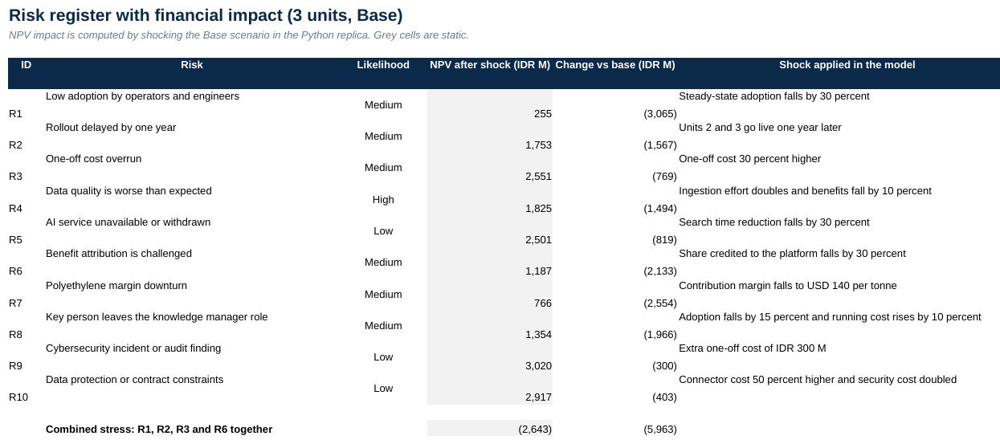
The most damaging single risks are low adoption (NPV IDR 255 M), a challenge to benefit attribution and a margin downturn. A combination of low adoption, a one-year delay, a 30 percent cost overrun and weaker attribution gives an NPV of IDR -2,643 M. The mitigations are role-based onboarding, baselines and control units, and the stage gates in Section 8.
| KPI | Baseline | Target | Measured by |
|---|---|---|---|
| Mean time to repair | 14.0 h | 12.6 h | CMMS work order dates |
| Jobs repeating within 120 days | 20.6% | 14.4% | Failure memory report |
| Minutes a day searching and checking | 40 | 20 | Pilot survey and timed tasks |
| Median time to a cited answer | About 15 min | 3 min or less | Timed pilot tasks |
| Answers with an approved source | Not measured | At least 90% | Answer audit log |
| Weekly active users | 0 | 85% of users | Usage log |
| Documents without approval status | 67% | 10% or less | Documents and Data Quality pages |
Decisions requested: approve the pilot budget of IDR 1,766 M with the three gates above; nominate a knowledge manager and a unit sponsor; and give read access to EDMS, AIMS, CMMS and historian extracts for the pilot unit.
The work orders and plant data are sample data prepared for the case. Salaries, margins, production loss and cost lines are estimates until the pilot replaces them. The model has no terminal value, financing or working capital, and the Monte Carlo run treats drivers as independent. Market figures come from public summaries of analyst reports and should be read as orders of magnitude.
The workbook Business_Impact_Financial_Model.xlsx contains the sheets Inputs, Case_Data, Case_Metrics, Labour, Downtime_Value, Levers, Costs, Rollout, CF_1U to CF_12U, Summary, Market, Competitors, Sensitivity, MonteCarlo, Risks, KPIs, Reconciliation, Checks and Sources. The Sources sheet lists the references with links. Blue cells are inputs, black cells are formulas and grey cells are static outputs of the Python replica.
| Assumption | Base | Scenario range | Evidence tag |
|---|---|---|---|
| Minutes a day spent searching and checking | 40 min | 36 min to 44 min | Assumption |
| Reduction in search time | 50% | 45% to 55% | Assumption |
| Share of freed time that is productive | 60% | 55% to 65% | Assumption |
| Steady-state adoption | 85% | 80% to 90% | Assumption |
| Reduction in mean time to repair | 10.0% | 8.5% to 11.5% | Assumption |
| Share of the gain credited to the platform | 70% | 65% to 75% | Assumption |
| Reduction in repeat failures | 30% | 25% to 35% | Assumption |
| Contribution margin lost per tonne | USD 220 | USD 190 to USD 250 | Estimate |
| Share of breakdown hours with output loss | 20% | 17% to 23% | Assumption |
| Unit capacity (kt a year) | 336 | 336 to 336 | Market source |
| New joiners and role changes a year | 6 | 5 to 7 | Assumption |
| Platform configuration (person-months) | 8 | 9 to 7.5 | Estimate |
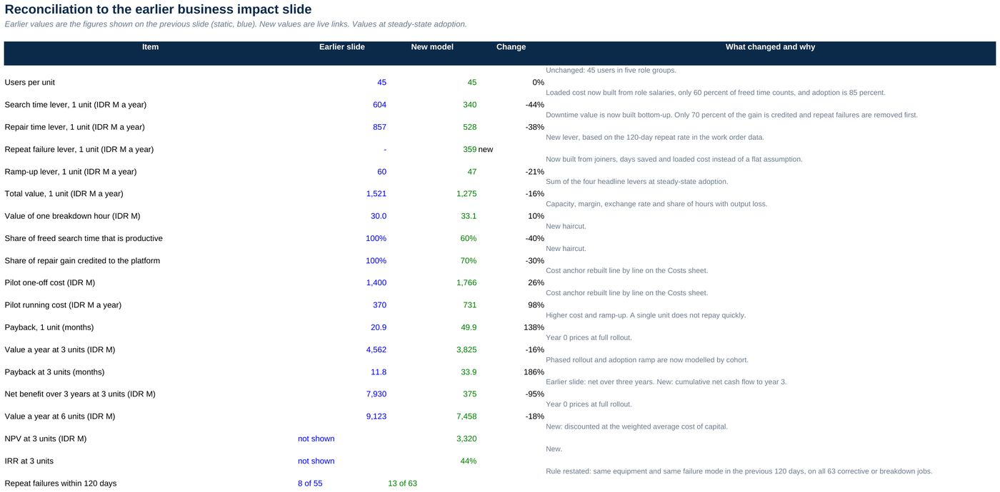